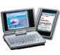

參考資訊：
http://ezaurus.com/lineup/sl/compare_spec.html
 |
||||||||
| Model | SL-C3200 | SL-C3100 | SL-C3000 | SL-C1000 | SL-C860 | SL-C760 | SL-C750 | SL-C700 |
|---|---|---|---|---|---|---|---|---|
| CPU | PXA270 416MHz | PXA270 416MHz | PXA270 416MHz | PXA270 416MHz | PXA255 400MHz | PXA255 400MHz | PXA255 400MHz | PXA250 400MHz |
| Flash | 128MB | 128MB | 16MB | 128MB | 128MB | 128MB | 64MB | 64MB |
| RAM | 64MB | 64MB | 64MB | 64MB | 64MB | 64MB | 64MB | 32MB |
| DISK | 6GB | 4GB | 4GB | |||||
| I/O | V | V | V | V | ||||
| USB | V | V | V | V | ||||
| Battery | EA-BL11 | EA-BL11 | EA-BL11 | EA-BL11 | EA-BL08 | EA-BL08 | EA-BL06 | EA-BL06 |